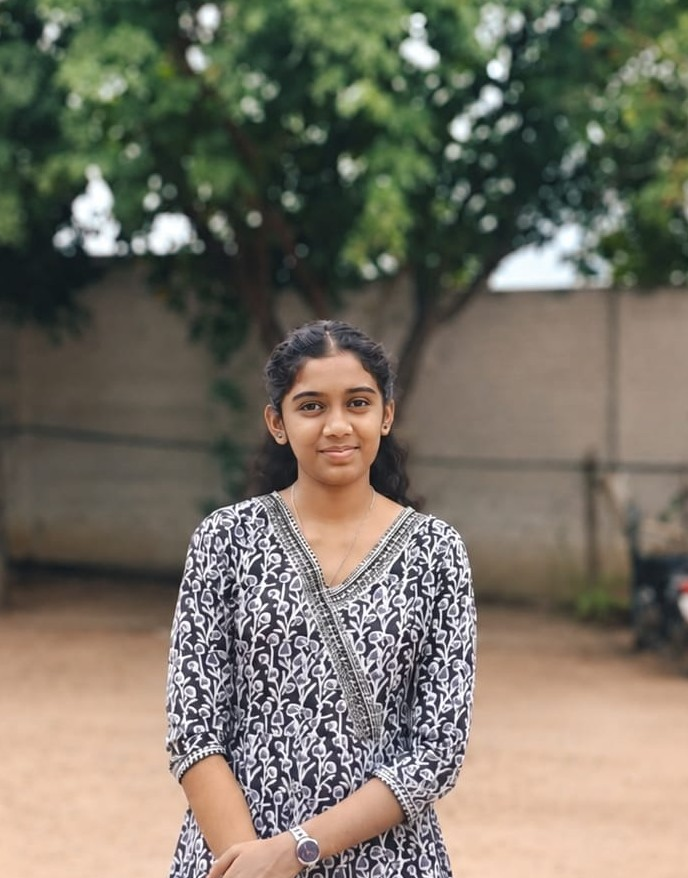

JS
JavaScript
Adding interaction and behaviour to web pages.
Currently learningHELLO, WELCOME TO MY PORTFOLIO
I enjoy learning new technologies and creating useful digital experiences. I'm developing my skills in JavaScript, Python, and MySQL.
Explore My Work ↗ Contact Me● Open to learning opportunities

A LITTLE ABOUT ME
I'm Hemavarshini K, a Computer Science student interested in programming and technology. I enjoy exploring how websites and applications work, practising coding, and improving my problem-solving skills.
My current learning focus is JavaScript, Python, and MySQL. I look forward to applying what I learn through academic and personal projects.
WHAT I'M LEARNING
Tools and technologies I'm building confidence with.
Adding interaction and behaviour to web pages.
Currently learningPractising programming logic and problem solving.
Currently learningLearning relational databases and SQL queries.
Currently learningTHINGS I'M EXPLORING
Starter concepts to replace with your completed work.
A responsive website to introduce a student and showcase skills.
View Live Project ↗Practise responsive layouts, navigation, and interactive features.
A beginner program concept to calculate totals, averages, and grades.
Practise variables, conditions, input validation, and functions.
A collection of Java programs and practice projects.
View Java Project ↗Explore Java fundamentals, object-oriented programming, and problem solving.
These are sample project ideas, not claims of completed work. Update them after building your projects.
LET'S CONNECT
Let's connect about learning, projects, and opportunities.